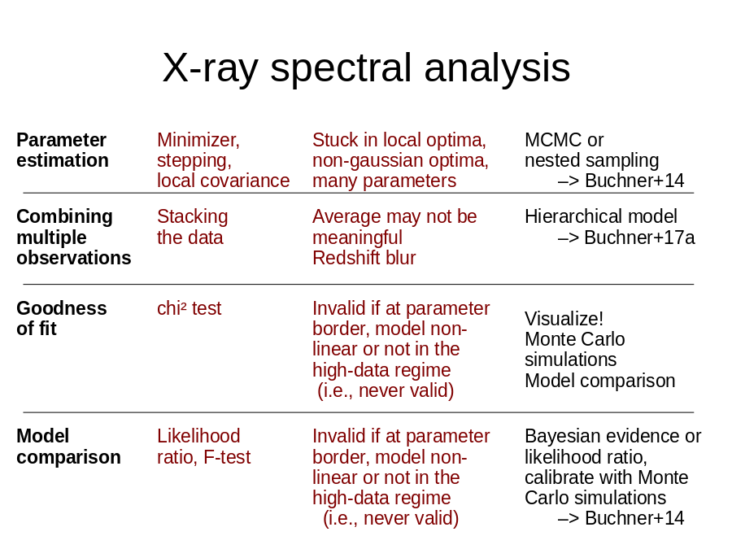

First page Back Continue Last page Overview Text
 Buchner+14
Stuck in local optima,
non-gaussian optima,
many parameters
Combining
multiple
observations
Stacking
the data
Hierarchical model
–> Buchner+17a
Average may not be meaningful
Redshift blur
Goodness
of fit
chi² test
Visualize!
Monte Carlo simulations
Model comparison
Invalid if at parameter border, model non-linear or not in the high-data regime
(i.e., never valid)
Model
comparison
Likelihood
ratio, F-test
Bayesian evidence or likelihood ratio,
calibrate with Monte Carlo simulations
–> Buchner+14
Invalid if at parameter border, model non-linear or not in the high-data regime
(i.e., never valid)">